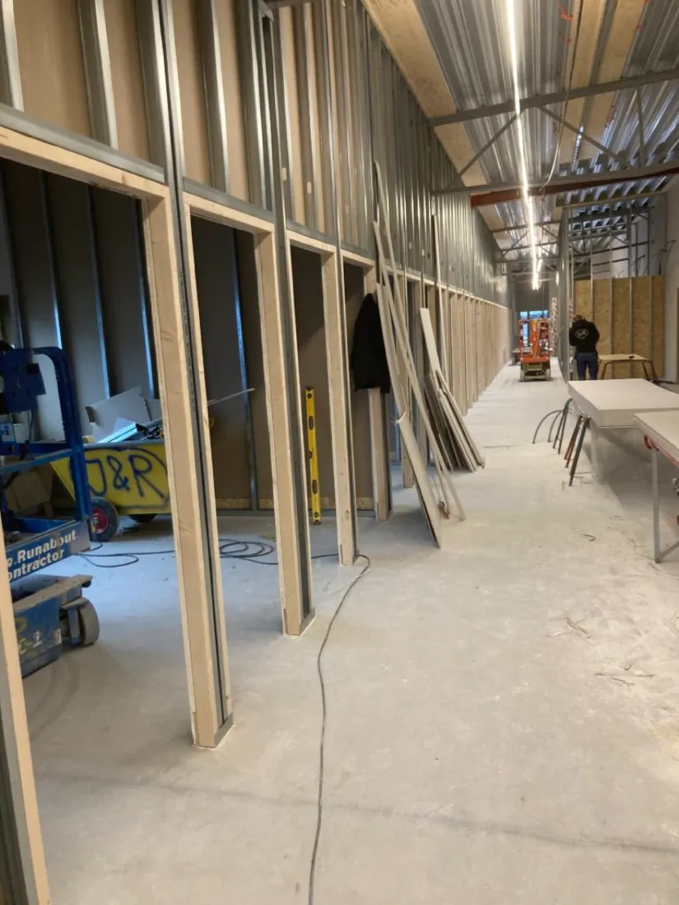

Privatpersoner.
Renovering, snickeri och praktiska förbättringar i hemmet.
Berätta om ditt hemSNICKARE 031 AB
Vi hjälper privatpersoner, företag och bostadsrättsföreningar med byggservice i Göteborg med omnejd.

Det behöver inte vara en totalrenovering för att vara värt att göra ordentligt.
Vi arbetar med snickeri, renovering, ombyggnad, montage och fastighetsskötsel. För uppdrag som kräver fler yrkeskompetenser samarbetar vi med bland annat elektriker, VVS, målare och plåtslagare.
Utforska tjänsternaFÖR DIG, ER OCH HUSET
Renovering, snickeri och praktiska förbättringar i hemmet.
Berätta om ditt hemMontage, ombyggnad och service för arbetsplatsen.
Prata om ert uppdragHjälp med mindre åtgärder, underhåll och byggprojekt.
Beskriv föreningens behovGöteborg, Mölndal, Partille och Askim är några av områdena vi hjälper kunder i.
Beskriv var uppdraget finns så går vi igenom hur vi kan hjälpa dig.
Kontakta ossDITT NÄSTA PROJEKT BÖRJAR HÄR
En liten åtgärd eller ett större lyft.
Berätta, så börjar vi där.